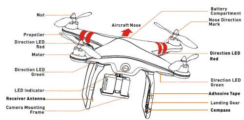
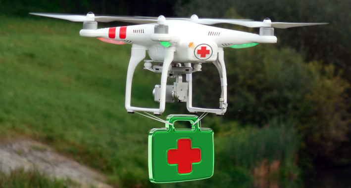
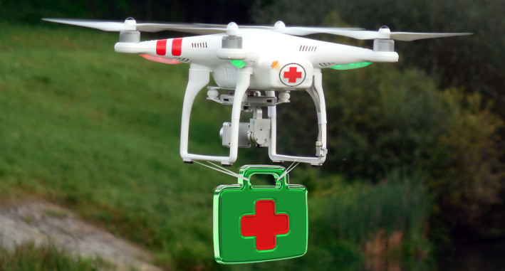

Why is the anatomy of a drone required to be known?:-
It is crucial to know about the parts of a drone because it will help you to assemble the drone perfectly. The drone will fly safely and run smooth. You will be able to fulfill the purpose of using the drone. You will have the idea about the inspection
of the various important components of the drone. If the drone is not functioning properly then also you will need the idea about the drone anatomy to understand what problem the drone is facing in its function. If there is any flying issue, you
w/ill be able to find out the actual problem behind the issue.

Different important components in drone parts:-
*Flight controller
*Motors
*Propellers
*Speed controllers
*Gimbal and the camera
*Battery
click here to know more about Different parts of drone.
Working of drones:-
Up, Up and Away: How Do Drones Work?
Drones can be controlled remotely, often from a smartphone or tablet. Wireless connectivity lets pilots view the drone and its surroundings from a birds-eye perspective. Users can also leverage apps to pre-program specific GPS coordinates and create
an automated flight path for the drone. Another handy wirelessly-enabled feature is the ability to track battery charge in real time, an important consideration since drones use smaller batteries to keep their weight low. Rotors A drone relies
on rotors for its vertical motion. Drones use their rotors—which consist of a propeller attached to a motor—to hover, meaning the downward thrust of the drone is equal to the gravitational pull working against it; climb, when pilots increase the
speed until the rotors produce an upward force greater than gravity; and descend, when pilots perform the opposite and decrease speed. To hover, two of a drone’s four rotors move clockwise, while the other two move counterclockwise, ensuring that
the sideways momentum of the drone remains balanced. To avoid throwing its vertical motion off-kilter, the other two rotors on the drone will increase their spin. The same principle applies to movi- ng forward and backwards—the rotors of the drone
must apply thrust while making sure the spin of the rotors keeps the drone balanced.
 
